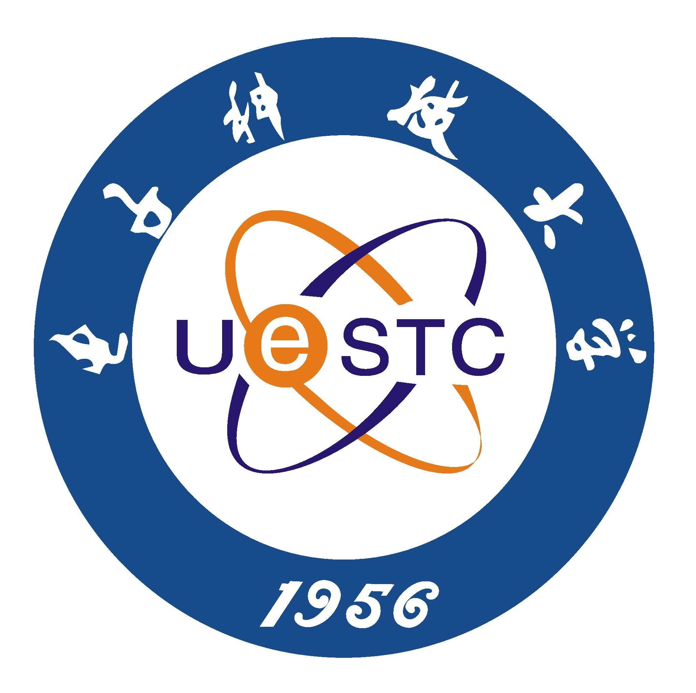

|
Master of Science in Computer Science, |
I am currently an incoming Ph.D. student at Central South University, where I am supervised by Prof. Zhigang Hu.
Before that, I received the M.Eng. degree in the School of Computer Science and Engineering from Central
South University in 2022.
I obtained my B.Sc. degree (ranked top 1 out of 56 students) in the School of Computer Science in June 2019 from South-Central University for Nationalities. In the same year, I was admitted to study for an M.Sc degree at Central South University without entrance examination.
Research Interests: Graph Neural Networks, Data Mining, Machine Learning, Smart Transportation, WSN, Edge Computing, Cloud Computing.
|  |
M. S., Central South University (CSU), Changsha, Hunan [2019.9 ~ 2022.7]
|
B. Sc, South-Central University for Nationalities, Wuhan, Hubei [2015.9 ~ 2019.7]
|
Research on Multi-modal Transportation Recommendation Algorithm with Personalization and Situation
Awareness
Project Leader;
the Fundamental Research Funds for the Central Universities of Central South University, No.
2021zzts0735
Research on Integrated Navigation System for Trucks in Factory
Project Leader;
the Innovation Training Grant for Students of Central South University, China, No. GCX2020347Y
Robot-oriented adaptive intelligent navigation and scene perception
Member;
the Fundamental Research Funds for the Central Universities of Central South University, No.
2021zzts0753
![[Transcript]](pdf/transcript_scuec.jpg){kind=link}